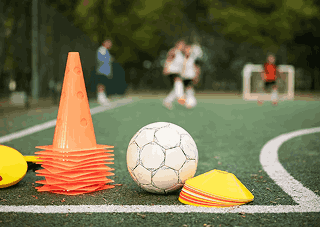
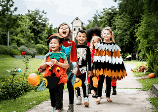
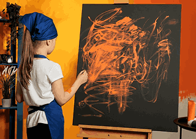
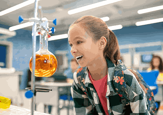

Welcome to our Student Life page, where the magic of childhood comes
alive through the enriching experiences and adventures that our
students embark on each day. At our kindergarten school, we believe
that learning goes beyond textbooks, and we strive to create a
holistic and engaging environment that nurtures every aspect of a
child's development.nd encourage active exploration.
Our Features
Extracurricular Activities
At Little Learners Academy, we believe in nurturing well-rounded
individuals. Our extracurricular activities offer a diverse range of
experiences that complement our academic curriculum and encourage
students to explore their interests and passions. We offer a wide
array of extracurricular activities, including
Sports and Athletics
Students can participate in various sports, from soccer and
basketball to gymnastics and yoga. Sports help promote teamwork,
physical fitness, and a sense of discipline.
Art and Creativity
Our art classes and creative workshops provide a platform for
students to express their creativity through painting, drawing,
and other artistic forms.
Music and Performing Arts
Students can discover their musical talents through singing,
playing musical instruments, and participating in drama and
theater performances..
Language Clubs
Language clubs offer an opportunity for students to immerse
themselves in different languages and cultures, fostering global
awareness.
Science Club
The science club allows young scientists to explore the wonders of
science through fun experiments and hands-on learning.
Cooking and Culinary Arts
Cooking classes introduce students to the joys of preparing and
tasting delicious and healthy meals.
Our Features
Events & Celebrations
At Little Learners Academy, we celebrate every milestone and create
cherished memories for our students. Throughout the year, we host a
variety of events and celebrations that bring the entire school
community together. Some of our memorable events include

Annual Sports Day
A day filled with friendly competition, team spirit, and
sportsmanship.

Cultural Festivals
Celebrations of diverse cultural festivals, promoting cultural
exchange and appreciation.

Art Exhibitions
Showcasing our students' artistic talents through exhibitions
and displays.

Science Fair
A platform for budding scientists to present their innovative
projects and experiments.
International Day
A vibrant celebration of our diverse community, embracing
cultures from around the world.
Graduation Ceremony
A significant milestone as our Kindergarten students prepare to
embark on their academic journey.
Our Achievements
Student Support
At Little Learners Academy, we are committed to providing a
supportive and nurturing environment that meets the unique needs of
each student. Our student support services include
Counseling
Professional counselors offer guidance and support to students,
addressing their emotional and social well-being.
Learning Support
Our educators provide additional assistance to students who may
require extra support in their academic journey.
Parent-Teacher Collaboration
We foster a strong partnership with parents to ensure seamless
communication and mutual support in a child's development.